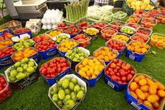

Agricultural Production
crops
justice
Egypt was famous during this period for cultivating many varieties of grains, plants and vegetables
Including beans, lentils, corn, fenugreek, cucumbers, onions, and lettuce
Among the fruits are figs, grapes, buckthorn, sycamores, and dates.
Here, oil crops, such as sesame, castor, and olive cultivation began since the Eighteenth Dynasty,
but it was always scarce.
Likewise, there were flower gardens in Egypt extending from the Egyptian Zouk,
who loved bouquets of flowers and their wreaths,
and there are colorful pictures of these bouquets and wreaths painted on the floors of the palaces,
and among those flowers are lotus flowers, chrysanthemums, and blue-flowered flowers,
as well as the plant known as mandrake, and they considered its fruits a symbol of love.
There are also wild plants growing on the banks of the Nile and in the desert,
including celery and rhizomes, which are used either in cooking food
or in perfumes, papyrus, and ornamental plants such as ivy and iris, dyeing plants,
and medicinal plants such as the turpentine tree.

Thanks